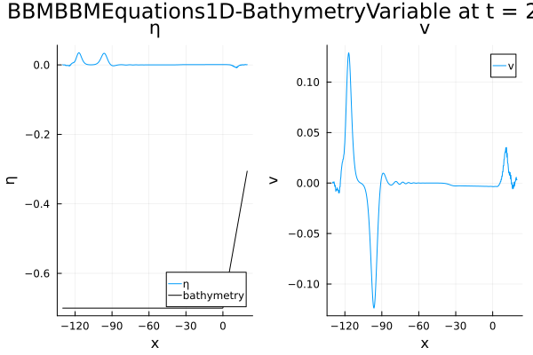
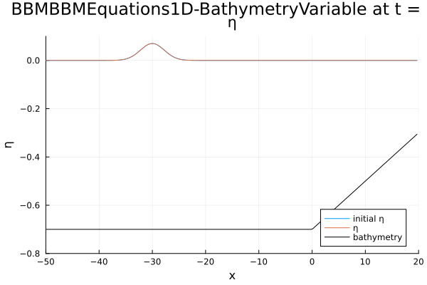
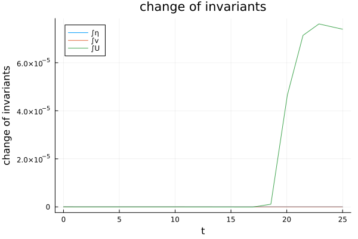
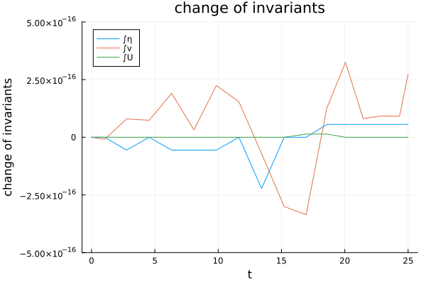
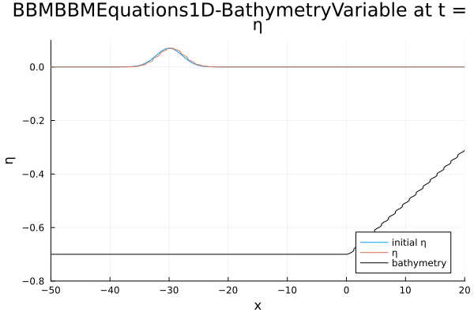

Running a simulation
Introduction
In this tutorial we describe how to numerically solve the BBM-BBM (Benjamin-Bona-Mahony) equations with variable bottom topography in one dimension, which has been proposed in [IsrawiKalischKatsaounisMitsotakis2021] for two spatial dimensions. The equations describe a dispersive shallow water model, i.e. they extend the well-known shallow water equations in the sense that dispersion is modeled. The shallow water equations are a system of first order hyperbolic partial differential equations that can be written in the form of a balance law. In contrast, the BBM-BBM equations additionally include third-order mixed derivatives. In primitive variables $q = (\eta, v)$ they can be written as:
\[\begin{aligned} \eta_t + ((\eta + D)v)_x - \frac{1}{6}(D^2\eta_{xt})_x &= 0,\\ v_t + g\eta_x + \left(\frac{1}{2}v^2\right)_x - \frac{1}{6}(D^2v_t)_{xx} &= 0. \end{aligned}\]
Here, $\eta = h + b$ describes the total water height, $h$ the water height above the bottom topography (bathymetry), $b = \eta_0 - D$ the bathymetry and $v$ the velocity in horizontal direction. Here, $\eta_0$ is a reference water height also called still water height. In the case of the BBM-BBM equations, $\eta_0$ is usually taken to be 0. The gravitational acceleration is denoted as $g$. A sketch of the water height and the bathymetry can be found below.

In order to conduct a numerical simulation with DispersiveShallowWater.jl, we perform the following steps.
First, we load the necessary libraries:
using DispersiveShallowWater, OrdinaryDiffEqTsit5Define physical setup
As a first step of a numerical simulation, we define the physical setup we want to solve. This includes the set of equations, potentially including physical parameters, initial and boundary conditions as well as the domain. In the following example, the initial condition describes a traveling wave that moves towards a beach, which is modeled by a linearly increasing bathymetry.
equations = BBMBBMEquations1D(bathymetry_type = bathymetry_variable, gravity = 9.81)
function initial_condition_shoaling(x, t, equations::BBMBBMEquations1D, mesh)
A = 0.07 # amplitude of wave
x0 = -30 # initial center
eta = A * exp(-0.1*(x - x0)^2)
v = 0
D = x <= 0.0 ? 0.7 : 0.7 - 1/50 * x
return SVector(eta, v, D)
end
initial_condition = initial_condition_shoaling
boundary_conditions = boundary_condition_periodic
coordinates_min = -130.0
coordinates_max = 20.0
N = 512
mesh = Mesh1D(coordinates_min, coordinates_max, N + 1)Mesh1D{Float64}
xmin: -130.0
xmax: 20.0
N: 513The first line specifies that we want to solve the BBM-BBM equations with variable bathymetry using a gravitational acceleration $g = 9.81$. Afterwards, we define the initial condition, which is described as a function with the spatial variable x, the time t, the equations and a mesh as parameters. If an analytical solution is available, the time variable t can be used, and the initial condition can serve as an analytical solution to be compared with the numerical solution. Otherwise, you can just keep the time variable unused. An initial condition in DispersiveShallowWater.jl is supposed to return an SVector holding the values for each of the unknown variables. Since the bathymetry is treated as a variable (with time derivative 0) for convenience, we need to provide the value for the primitive variables eta and v as well as for D.
Next, we choose periodic boundary conditions. DispersiveShallowWater.jl also supports reflecting boundary conditions for the BBMBBMEquations1D, see boundary_condition_reflecting. Lastly, we define the physical domain as the interval from -130 to 20 and we choose 512 intermediate nodes. The mesh is homogeneous, i.e. the distance between each two nodes is constant. We choose the left boundary very far to the left in order to avoid an interaction of the left- and right-traveling waves.
Define numerical solver
In the next step, we build a Semidiscretization that bundles all ingredients for the spatial discretization of the model. Especially, we need to define a Solver. The simplest way to define a solver is to call the constructor by providing the mesh and a desired order of accuracy. In the following example, we use an accuracy order of 4. The default constructor simply creates periodic first- and second-derivative central finite difference summation-by-parts (SBP) operators of the provided order of accuracy. How to use other summation-by-parts operators, is described in the section on how to customize the solver. Note that for non-periodic boundary conditions, the solver also needs to be created with non-periodic operators, see, e.g. examples/bbm_bbm_1d/bbm_bbm_1d_basic_reflecting.jl.
solver = Solver(mesh, 4)
semi = Semidiscretization(mesh, equations, initial_condition, solver, boundary_conditions = boundary_conditions)Semidiscretization
#spatial dimensions: 1
mesh: Mesh1D{Float64} with length 513
equations: BBMBBMEquations1D-BathymetryVariable
initial condition: initial_condition_shoaling
boundary condition: boundary_condition_periodic
source terms: nothingFinally, we put the mesh, the equations, the initial_condition, the solver and the boundary_conditions together in a semidiscretization semi.
Solve system of ordinary differential equations
Once we have obtained a semidiscretization, we can solve the resulting system of ordinary differential equations. To do so, we specify the time interval that we want to simulate and obtain an ODEProblem from the SciML ecosystem for ordinary differential equations by calling semidiscretize on the semidiscretization and the time span. Additionally, we can analyze the numerical solution using an AnalysisCallback. The analysis includes computing the $L^2$ error and $L^\infty$ error of the different solution's variables compared to the initial condition (or, if available, at the same time analytical solution). Additional errors can be passed by the keyword argument extra_analysis_errors. Additional integral quantities that should be analyzed can be passed by keyword argument extra_analysis_integrals. In this example we pass the conservation_error, which computes the temporal change of the total amount (i.e. integral) of the different variables over time. In addition, the integrals of the total water height $\eta$ waterheight_total, the velocity and the entropy are computed and saved for each time step. The total water height and the total velocity are linear invariants of the BBM-BBM equations, i.e. they do not change over time. The total entropy
\[\mathcal E(t; \eta, v) = \frac{1}{2}\int_\Omega g\eta^2 + (\eta + D)v^2\textrm{d}x\]
is a nonlinear invariant and should be constant over time as well. During the simulation, the AnalysisCallback will print the results to the terminal.
Finally, the ode can be solved using the interface from OrdinaryDiffEq.jl. This means, we can specify a time-stepping scheme we want to use the tolerances for the adaptive time-stepping and the time values, where the solution values should be saved. In this case, we use the adaptive explicit Runge-Kutta method Tsit5 by Tsitouras of order 5(4), which is implemented in the subpackage OrdinaryDiffEqTsit5.jl. If you want to use other time-stepping schemes, you can install the respective subpackage or the whole package OrdinaryDiffEq.jl, which will install every available solver. Here, we save the solution at 100 equidistant points.
tspan = (0.0, 25.0)
ode = semidiscretize(semi, tspan)
analysis_callback = AnalysisCallback(semi; interval = 10,
extra_analysis_errors = (:conservation_error,),
extra_analysis_integrals = (waterheight_total,
velocity, entropy),
io = devnull)
callbacks = CallbackSet(analysis_callback)
saveat = range(tspan..., length = 100)
sol = solve(ode, Tsit5(), abstol = 1e-7, reltol = 1e-7,
save_everystep = false, callback = callbacks, saveat = saveat)retcode: Success
Interpolation: 1st order linear
t: 100-element Vector{Float64}:
0.0
0.25252525252525254
0.5050505050505051
0.7575757575757576
1.0101010101010102
1.2626262626262625
1.5151515151515151
1.7676767676767677
2.0202020202020203
2.272727272727273
⋮
22.97979797979798
23.232323232323232
23.484848484848484
23.737373737373737
23.98989898989899
24.242424242424242
24.494949494949495
24.747474747474747
25.0
u: 100-element Vector{RecursiveArrayTools.ArrayPartition{Float64, Tuple{Vector{Float64}, Vector{Float64}, Vector{Float64}}}}:
([0.0, 0.0, 0.0, 0.0, 0.0, 0.0, 0.0, 0.0, 0.0, 0.0 … 3.970457144557402e-98, 2.5091219407506056e-99, 1.5587515600325034e-100, 9.519319686177399e-102, 5.714902171134897e-103, 3.3727609949003114e-104, 1.9567539119467424e-105, 1.1159911034969113e-106, 6.2568988186290324e-108, 3.4485093610035348e-109], [0.0, 0.0, 0.0, 0.0, 0.0, 0.0, 0.0, 0.0, 0.0, 0.0 … 0.0, 0.0, 0.0, 0.0, 0.0, 0.0, 0.0, 0.0, 0.0, 0.0], [0.7, 0.7, 0.7, 0.7, 0.7, 0.7, 0.7, 0.7, 0.7, 0.7 … 0.3584795321637427, 0.35263157894736835, 0.3467836257309941, 0.34093567251461987, 0.33508771929824555, 0.3292397660818713, 0.32339181286549706, 0.31754385964912274, 0.31169590643274847, 0.30584795321637426])
([-3.3266769286955745e-56, 3.4020937934183304e-56, -1.28110403867666e-56, 9.828752925943627e-57, -4.6692923914656543e-57, 3.0019906715477167e-57, -1.5859730384743552e-57, 9.501055334761549e-58, -5.2424438670908326e-58, 3.0528603514323195e-58 … -8.220740589979745e-52, 3.221180119067122e-52, -1.2492123771154623e-52, 4.793841318777071e-53, -1.8199598332030724e-53, 6.83382456896296e-54, -2.5368939388116927e-54, 9.29294660701534e-55, -3.345698541695926e-55, 9.253679772020535e-56], [8.22664857354664e-57, 3.872683451562685e-59, 4.567326717508473e-57, 1.7453285029795018e-58, 1.30994158770606e-57, -9.250238919850698e-59, 3.40428326007365e-58, -7.157181886138857e-59, 9.167429840195572e-59, -3.1405192168471896e-59 … 5.126961700354149e-52, -2.07231491798086e-52, 8.292330778454777e-53, -3.2842338729017097e-53, 1.287175802717259e-53, -4.991216916132867e-54, 1.914916308611697e-54, -7.264824623412435e-55, 2.831003381598375e-55, -9.928505667275793e-56], [0.7, 0.7, 0.7, 0.7, 0.7, 0.7, 0.7, 0.7, 0.7, 0.7 … 0.3584795321637427, 0.35263157894736835, 0.3467836257309941, 0.34093567251461987, 0.33508771929824555, 0.3292397660818713, 0.32339181286549706, 0.31754385964912274, 0.31169590643274847, 0.30584795321637426])
([-4.854346678461538e-53, 4.84217795715584e-53, -1.8542766714024428e-53, 1.4192007562353784e-53, -6.725965171493964e-54, 4.3784551383925497e-54, -2.2918329980113688e-54, 1.3933108778821824e-54, -7.623314399449751e-55, 4.4938630812484216e-55 … -9.797481297990453e-49, 3.9048787193876566e-49, -1.5411519695681557e-49, 6.022052568468795e-50, -2.32925429111706e-50, 8.915830452722663e-51, -3.375963072748574e-51, 1.2618636155244574e-51, -4.641154093231361e-52, 1.3207974482337746e-52], [1.8095594611896477e-53, -1.4586740531869244e-55, 9.786696586712784e-54, 2.731254614356069e-55, 2.840312860465382e-54, -2.130348909162738e-55, 7.543974831078364e-55, -1.546757744029756e-55, 2.0685288441585583e-55, -6.788003538820419e-56 … 9.231101678772082e-49, -3.79033586426737e-49, 1.5414949173564857e-49, -6.208196329787182e-50, 2.47551351909262e-50, -9.771655879444739e-51, 3.8186878798735826e-51, -1.4763840457578174e-51, 5.8708013078825014e-52, -2.0979677252802554e-52], [0.7, 0.7, 0.7, 0.7, 0.7, 0.7, 0.7, 0.7, 0.7, 0.7 … 0.3584795321637427, 0.35263157894736835, 0.3467836257309941, 0.34093567251461987, 0.33508771929824555, 0.3292397660818713, 0.32339181286549706, 0.31754385964912274, 0.31169590643274847, 0.30584795321637426])
([-1.1612249598088084e-50, 1.132036632073582e-50, -4.4040203274967057e-51, 3.3635235499463054e-51, -1.591132783134331e-51, 1.0476814776099701e-51, -5.438798459198258e-52, 3.352465398666592e-52, -1.8198245837277057e-52, 1.0856405358117806e-52 … -1.929459340139595e-46, 7.8187982236098325e-47, -3.1389791667445973e-47, 1.248253630568493e-47, -4.9158748388538637e-48, 1.9168380924923595e-48, -7.39741076197219e-49, 2.8188995368280207e-49, -1.058183731695284e-49, 3.0941346970972596e-50], [5.352511129620087e-51, -1.0908272045290342e-52, 2.8257322911823956e-51, 4.999630377314839e-53, 8.297671469961462e-52, -6.5937492633097535e-53, 2.249834524046317e-52, -4.511965808718048e-53, 6.275500754313617e-53, -1.9781064904204907e-53 … 2.2478403208627847e-46, -9.37460323569393e-47, 3.8741090619012473e-47, -1.5861584292247035e-47, 6.432809458207822e-48, -2.5838456248385578e-48, 1.0280500798155162e-48, -4.0482750622305825e-49, 1.6415981036721646e-49, -5.97355848020273e-50], [0.7, 0.7, 0.7, 0.7, 0.7, 0.7, 0.7, 0.7, 0.7, 0.7 … 0.3584795321637427, 0.35263157894736835, 0.3467836257309941, 0.34093567251461987, 0.33508771929824555, 0.3292397660818713, 0.32339181286549706, 0.31754385964912274, 0.31169590643274847, 0.30584795321637426])
([-1.1119812060735511e-48, 1.061950048493519e-48, -4.1915038875320985e-49, 3.1953390610105887e-49, -1.5096028750999591e-49, 1.0041802090636732e-49, -5.175781351001117e-50, 3.2308324460015797e-50, -1.741252105526217e-50, 1.0505688836719106e-50 … -1.5404935194945574e-44, 6.341647980118868e-45, -2.5873639189268242e-45, 1.0460484810616736e-45, -4.18992650727533e-46, 1.662364211849356e-46, -6.530371769409323e-47, 2.5336413393373456e-47, -9.69336791666024e-48, 2.906322279402745e-48], [5.88686035252528e-49, -1.8735730830787201e-50, 3.041636812512613e-49, 2.4183032077273453e-51, 9.031967188580767e-50, -7.5708113028812e-51, 2.4955485676705497e-50, -4.912320567500515e-51, 7.070976515978122e-51, -2.149418947888793e-51 … 2.0605438378136654e-44, -8.721989240320594e-45, 3.659684455067951e-45, -1.521930208620741e-45, 6.271866295077067e-46, -2.56086116978297e-46, 1.036242959609893e-46, -4.151208021602032e-47, 1.7143455780933696e-47, -6.344210832363708e-48], [0.7, 0.7, 0.7, 0.7, 0.7, 0.7, 0.7, 0.7, 0.7, 0.7 … 0.3584795321637427, 0.35263157894736835, 0.3467836257309941, 0.34093567251461987, 0.33508771929824555, 0.3292397660818713, 0.32339181286549706, 0.31754385964912274, 0.31169590643274847, 0.30584795321637426])
([-6.211490831292013e-47, 5.815469214496461e-47, -2.3283166034052177e-47, 1.7719334830433989e-47, -8.363946585627879e-48, 5.618389652536205e-48, -2.8766943893681124e-48, 1.8181121381067493e-48, -9.73023073145513e-49, 5.938672647611665e-49 … -7.176501158922278e-43, 3.001397814560766e-43, -1.244539439302321e-43, 5.115597581151952e-44, -2.084069026064639e-44, 8.413209559549546e-45, -3.3641594436641556e-45, 1.3288086866379184e-45, -5.181049553152648e-46, 1.5926482086600049e-46], [3.660725464898289e-47, -1.5891523447533763e-48, 1.852514729798402e-47, -3.9609040218606155e-50, 5.564739006269061e-48, -4.922198682571264e-49, 1.566633427072623e-48, -3.0326637246966696e-49, 4.50917333111489e-49, -1.3229170167825826e-49 … 1.0664481265255863e-42, -4.582708903978534e-43, 1.952786024583052e-43, -8.250343818305791e-44, 3.455454338276047e-44, -1.4344793396155745e-44, 5.904324544200902e-45, -2.4065715259414518e-45, 1.0122875479992918e-45, -3.810129165907381e-46], [0.7, 0.7, 0.7, 0.7, 0.7, 0.7, 0.7, 0.7, 0.7, 0.7 … 0.3584795321637427, 0.35263157894736835, 0.3467836257309941, 0.34093567251461987, 0.33508771929824555, 0.3292397660818713, 0.32339181286549706, 0.31754385964912274, 0.31169590643274847, 0.30584795321637426])
([-2.3254626047035123e-45, 2.1372128067170738e-45, -8.674198234833523e-46, 6.591212850386183e-46, -3.1098298513365526e-46, 2.1081097603606988e-46, -1.072999693268961e-46, 6.862112894873971e-47, -3.6482968643087173e-47, 2.2520691008006217e-47 … -2.2526908914192486e-41, 9.568304879389733e-42, -4.0307882137359107e-42, 1.6838105763329625e-42, -6.973908940604282e-43, 2.8631446775814025e-43, -1.1647467866122746e-43, 4.681076210056882e-44, -1.8589367026732445e-44, 5.8535543297607e-45], [1.4921943374772912e-45, -8.159192651344666e-47, 7.407030025287125e-46, -9.014975641636209e-48, 2.2505391642665058e-46, -2.0968876750563706e-47, 6.450331066768941e-47, -1.2311029429856826e-47, 1.8847826000123358e-47, -5.3490648507376805e-48 … 3.636794951579025e-41, -1.5861112439103657e-41, 6.861826391245667e-42, -2.9442874848744456e-42, 1.2528033834163378e-42, -5.2856088934524855e-43, 2.211964833307413e-43, -9.16867002540799e-44, 3.925992607828551e-44, -1.502128357466255e-44], [0.7, 0.7, 0.7, 0.7, 0.7, 0.7, 0.7, 0.7, 0.7, 0.7 … 0.3584795321637427, 0.35263157894736835, 0.3467836257309941, 0.34093567251461987, 0.33508771929824555, 0.3292397660818713, 0.32339181286549706, 0.31754385964912274, 0.31169590643274847, 0.30584795321637426])
([-6.392816525417398e-44, 5.774216186601107e-44, -2.3744580222370097e-44, 1.8017467124867853e-44, -8.500642384911619e-45, 5.811631703310101e-45, -2.9424726193597494e-45, 1.9031304318933367e-45, -1.0055345011906707e-45, 6.276823109329715e-46 … -5.217703773629596e-40, 2.2501059257385136e-40, -9.626624788831386e-41, 4.085298737214067e-41, -1.7194676721117323e-41, 7.175971211422747e-42, -2.968463957158452e-42, 1.2132381956762715e-42, -4.904477055657723e-43, 1.5807451107735247e-43], [4.4001349876130626e-44, -2.890251039279419e-45, 2.1453561245960637e-44, -4.756545242441407e-46, 6.592646983117397e-45, -6.4602922868290774e-46, 1.922236744644901e-45, -3.62612425567606e-46, 5.699157787342664e-46, -1.5679568060222802e-46 … 9.01510822790991e-40, -3.988983809584351e-40, 1.7515627917055578e-40, -7.630455079697971e-41, 3.297370390708959e-41, -1.4133137292330865e-41, 6.01103527014069e-42, -2.5326733725181626e-42, 1.1034155675522137e-42, -4.2895166213814426e-43], [0.7, 0.7, 0.7, 0.7, 0.7, 0.7, 0.7, 0.7, 0.7, 0.7 … 0.3584795321637427, 0.35263157894736835, 0.3467836257309941, 0.34093567251461987, 0.33508771929824555, 0.3292397660818713, 0.32339181286549706, 0.31754385964912274, 0.31169590643274847, 0.30584795321637426])
([-1.3787502356780142e-42, 1.2251192515697758e-42, -5.102248413181243e-43, 3.866657879980898e-43, -1.8249500865199235e-43, 1.257661122285717e-43, -6.337805135464225e-44, 4.1438335652984e-44, -2.1765772877310583e-44, 1.373787958227678e-44 … -9.512827864001614e-39, 4.1649668629380093e-39, -1.809151025538928e-39, 7.797660080444288e-40, -3.334260940488614e-40, 1.4140535939740689e-40, -5.946103254780043e-41, 2.4704749734776346e-41, -1.0162155568818575e-41, 3.350572088593409e-42], [1.0073885465915063e-42, -7.708119328743966e-44, 4.830052955998956e-43, -1.5552814059006917e-44, 1.5011160379509404e-43, -1.5452619971082871e-44, 4.4499720175529573e-44, -8.316078979773222e-45, 1.3381830897035244e-44, -3.575828802186266e-45 … 1.741788172166712e-38, -7.81302025396928e-39, 3.482260710997049e-39, -1.5397437062986265e-39, 6.75584819170487e-40, -2.941013071160187e-40, 1.270879764608407e-40, -5.441183205061021e-41, 2.4110376698665343e-41, -9.519810669134443e-42], [0.7, 0.7, 0.7, 0.7, 0.7, 0.7, 0.7, 0.7, 0.7, 0.7 … 0.3584795321637427, 0.35263157894736835, 0.3467836257309941, 0.34093567251461987, 0.33508771929824555, 0.3292397660818713, 0.32339181286549706, 0.31754385964912274, 0.31169590643274847, 0.30584795321637426])
([-2.432994172029191e-41, 2.1286191748827473e-41, -8.975456276658371e-42, 6.793904039443185e-42, -3.208924437454861e-42, 2.2281524772653407e-42, -1.1181897716921028e-42, 7.387985834391457e-43, -3.859024067592464e-43, 2.4626119032083706e-43 … -1.4216499769053905e-37, 6.324823950705048e-38, -2.7877368326760615e-38, 1.2203119369089982e-38, -5.2998567432274e-39, 2.283548505392591e-39, -9.758579487587093e-40, 4.120411662271904e-40, -1.7241820813674354e-40, 5.812886173319256e-41], [1.8726571942779466e-41, -1.6338488003218476e-42, 8.838532003654116e-42, -3.73994672811807e-43, 2.778128006495664e-42, -3.001765984081666e-43, 8.369337433426092e-43, -1.552909651913671e-43, 2.552013177891184e-43, -6.63510203059397e-44 … 2.7449634883088455e-37, -1.2442829151801487e-37, 5.636081548035407e-38, -2.5277328607811003e-38, 1.1261145281654129e-38, -4.9779189471898296e-39, 2.1850367629167955e-39, -9.504002781818484e-40, 4.2819412360857114e-40, -1.7167523616242744e-40], [0.7, 0.7, 0.7, 0.7, 0.7, 0.7, 0.7, 0.7, 0.7, 0.7 … 0.3584795321637427, 0.35263157894736835, 0.3467836257309941, 0.34093567251461987, 0.33508771929824555, 0.3292397660818713, 0.32339181286549706, 0.31754385964912274, 0.31169590643274847, 0.30584795321637426])
⋮
([-0.0021768568053234594, -0.0010991531445549746, -0.0005923337764635479, 0.0007288095725897835, 1.0194275012593428e-5, -2.79118401654712e-5, 0.0015949558128276063, 0.0029050117857205276, 0.0030434896862103146, 0.006563986119498465 … -0.00222696884926259, -0.003441769366518597, -0.0015879257552647047, -0.003050619358800103, -0.002758057639153022, -0.0021422574098989727, -0.0025141586412721004, -0.0024465018057309718, -0.00161598361369123, -0.0024066935622777835], [-0.0054715086911938235, -0.0029871877624562666, -0.0016674303283641377, -0.0028692320539262864, 0.0008574486753097407, 0.004193705413226369, 0.003978298543770488, 0.008535193247888938, 0.016348161440089763, 0.018233111510044014 … 0.013589360496030408, 0.0053184760222166885, 0.009735082114793786, 0.0003065851742543356, -0.00269324341827983, -0.0042961792575479055, -0.011985325702843882, -0.01637377384796098, -0.013551798527944458, -0.015385993847553407], [0.7, 0.7, 0.7, 0.7, 0.7, 0.7, 0.7, 0.7, 0.7, 0.7 … 0.3584795321637427, 0.35263157894736835, 0.3467836257309941, 0.34093567251461987, 0.33508771929824555, 0.3292397660818713, 0.32339181286549706, 0.31754385964912274, 0.31169590643274847, 0.30584795321637426])
([-0.0025058754714950477, -0.0018252401083407083, -0.0012170710172630624, -0.0004346836902288237, -0.0013914765657634446, -0.0006454704445884714, 0.0003624939402137502, 9.227440534213204e-5, 0.0007758495514690555, 0.0032025816518571914 … -0.0007495813428916906, -0.0024567471380157503, -0.0012479959889537201, -0.0011402444207664613, -0.001766337721861779, -0.0011932299799342421, -0.0009317168162548055, -0.002185674621966401, -0.00192640301060032, -0.002238819035873672], [-0.008500215882650819, -0.008052197913782567, -0.006710223227512025, -0.00490579766694601, -0.00016662613573012374, -0.0010831995550895082, -0.002825437554201255, 0.0016951642587392133, 0.005026166210851844, 0.007447947145961238 … 0.014897682145765567, 0.005054647031447274, 0.00651855027560711, 0.003540902403183412, -0.004337304397770415, -0.006724251036117911, -0.009349183936054594, -0.015967209051784528, -0.013402096253848972, -0.014632665884732996], [0.7, 0.7, 0.7, 0.7, 0.7, 0.7, 0.7, 0.7, 0.7, 0.7 … 0.3584795321637427, 0.35263157894736835, 0.3467836257309941, 0.34093567251461987, 0.33508771929824555, 0.3292397660818713, 0.32339181286549706, 0.31754385964912274, 0.31169590643274847, 0.30584795321637426])
([-0.0018622554233249378, -0.0021123681485297383, -0.00201284061874423, -0.0018802163330604422, -0.0021130676937297166, -0.000537621496085844, -0.000556085399090304, -0.001377281450139141, -0.00040220095052872514, 0.00038419516147383825 … -0.0002486445402888735, -0.0008151144146287434, -0.0009489768838255894, 7.280969411766241e-5, -0.00012834811639383652, -0.0007489867612513253, -0.00020792449032519438, -0.0014215010258286267, -0.0019272324088618468, -0.0015105892195676934], [-0.008813488861921086, -0.009894126107007722, -0.00904957843630177, -0.005997962024193469, -0.002740565571925123, -0.0054367215840740255, -0.004740852985397471, -0.001430732226014407, -0.002566187903276729, -0.0003434985467979916 … 0.01253198731474997, 0.007149774542558745, 0.002231209384620389, 0.0026726519583480718, -0.002647826855885069, -0.008268582882827127, -0.005767823961128177, -0.009963901856802482, -0.012910684832219677, -0.013900945522091519], [0.7, 0.7, 0.7, 0.7, 0.7, 0.7, 0.7, 0.7, 0.7, 0.7 … 0.3584795321637427, 0.35263157894736835, 0.3467836257309941, 0.34093567251461987, 0.33508771929824555, 0.3292397660818713, 0.32339181286549706, 0.31754385964912274, 0.31169590643274847, 0.30584795321637426])
([-0.001133675860432653, -0.0019792195078749053, -0.002394760918927372, -0.0027194686723655886, -0.002231926521571069, -0.000772810452453354, -0.00160066915528673, -0.0016998849039759711, -0.0007290768222370139, -0.0012913836928450265 … -0.0002814243624698537, 0.0006194090191934323, 6.215540712774328e-5, 0.0003747643068644369, 0.0010483911215439113, -0.0002607855830335159, -0.0003082236748741753, -0.0003422485370851133, -0.001155513703287446, -0.0008953442781451913], [-0.006535539122530529, -0.007624114377920408, -0.008186003097030305, -0.00705965964435884, -0.007102872939521903, -0.008641382954742195, -0.004395705298699568, -0.0031801118186905674, -0.005981871859824715, -0.0037794294484057756 … 0.007085304771235155, 0.007493523234654859, 0.0008507984105204097, -0.0011132286998257572, 0.00025969904127981166, -0.005076735636187262, -0.0039436315507129505, -0.004573764010264747, -0.011452364517922694, -0.01289053854955211], [0.7, 0.7, 0.7, 0.7, 0.7, 0.7, 0.7, 0.7, 0.7, 0.7 … 0.3584795321637427, 0.35263157894736835, 0.3467836257309941, 0.34093567251461987, 0.33508771929824555, 0.3292397660818713, 0.32339181286549706, 0.31754385964912274, 0.31169590643274847, 0.30584795321637426])
([-0.0008511358330189685, -0.0015164577577880091, -0.001934593226258452, -0.0024032659014876106, -0.0019213326793596002, -0.001599851503636344, -0.0025999763218839183, -0.0015052201055890057, -0.0009566872559563395, -0.0019251462693580777 … 1.8799770791611084e-5, 0.0010886957039586563, 0.0013383863926022224, 0.0004084034422461046, 0.0010496098949518084, 0.0004982167663148806, -0.00021636506112126123, 0.0004867695320033212, -0.0001314980022352888, -0.0006596159967184364], [-0.0035764780553831014, -0.0038311634820814193, -0.0056446160642292156, -0.007386349366452968, -0.010084275185538814, -0.0094955702618122, -0.004572665786896158, -0.0058132854629411425, -0.0067933850845482155, -0.004270770683756943 … 0.0025525180454892154, 0.003973798548515963, 0.0025244616568482967, -0.002430825321204019, 0.0015236893537786803, 0.0004841734112789818, -0.003597796445028401, -0.003240993175022962, -0.007826563056657857, -0.009519268041825386], [0.7, 0.7, 0.7, 0.7, 0.7, 0.7, 0.7, 0.7, 0.7, 0.7 … 0.3584795321637427, 0.35263157894736835, 0.3467836257309941, 0.34093567251461987, 0.33508771929824555, 0.3292397660818713, 0.32339181286549706, 0.31754385964912274, 0.31169590643274847, 0.30584795321637426])
([-0.000792698384937315, -0.0009183634647514676, -0.000934915982113645, -0.001330648411499141, -0.001410019006852301, -0.00234583302044677, -0.0029018076193151224, -0.0013297671659432838, -0.001607848123368631, -0.0020178183683431774 … 0.0008494957188758185, 0.0007873717126131069, 0.0017733873656995704, 0.0007790090351292563, 0.0005219959065625746, 0.001196175669430083, 0.0005176803053806748, 0.0007085992217650328, 0.00036727213530791833, -0.0005220550795865896], [-0.001725411274284148, -0.0015781479578723036, -0.0034054992529660576, -0.006005679262289433, -0.008915461991995591, -0.0074999251352368046, -0.005988295367013384, -0.009008284595567182, -0.0067199963775337775, -0.004548868639592586 … 0.0013324184811387954, -0.0005038873249420151, 0.003893011156058872, 0.0008631344597086198, 0.0007359623922790643, 0.002963452268975519, -0.0026137687747352337, -0.0032279145246394084, -0.0027193442234806826, -0.004148042975459568], [0.7, 0.7, 0.7, 0.7, 0.7, 0.7, 0.7, 0.7, 0.7, 0.7 … 0.3584795321637427, 0.35263157894736835, 0.3467836257309941, 0.34093567251461987, 0.33508771929824555, 0.3292397660818713, 0.32339181286549706, 0.31754385964912274, 0.31169590643274847, 0.30584795321637426])
([-0.0005045949122473985, -0.00039778847670825647, -0.00012800109383651122, -0.0004075931121561487, -0.0008937649160565854, -0.002224067387947423, -0.002125045342230444, -0.0013232114556893202, -0.002446817876022847, -0.0019249792252283755 … 0.0014126497007204567, 0.000505735161658294, 0.0010930602409071966, 0.001341132013455643, 0.0005503709527998719, 0.0014037390887266998, 0.0012127672337216675, 0.0005311117049970553, 0.0002934328821815505, -0.00014917439662095664], [-0.0010626077342141408, -0.0013768855201866962, -0.0022001075692806853, -0.003205490405329916, -0.0043897886518696055, -0.003964299264599122, -0.007175694729789989, -0.010192145810467682, -0.00630576014561092, -0.006142377770410894 … 0.0016391991001370426, -0.0016699284372851764, 0.0024153412537070242, 0.0044924333639540055, -0.0001528211073692893, 0.0013685125372691054, 0.00011639917811157392, -0.0007705176970852713, 0.0014618990738664711, 0.0005201307638745996], [0.7, 0.7, 0.7, 0.7, 0.7, 0.7, 0.7, 0.7, 0.7, 0.7 … 0.3584795321637427, 0.35263157894736835, 0.3467836257309941, 0.34093567251461987, 0.33508771929824555, 0.3292397660818713, 0.32339181286549706, 0.31754385964912274, 0.31169590643274847, 0.30584795321637426])
([7.803777008595514e-5, -4.958365526218909e-5, 8.636575723727453e-5, -0.00013921328589178644, -0.00046920070040038485, -0.0011943753025095898, -0.0007045047217102398, -0.001328535286713537, -0.0027038470572877033, -0.0016414104645829136 … 0.0009539072059425201, 0.0006299179050804497, 0.0002482363815247779, 0.0014908950301312598, 0.0011460682948277988, 0.0010936680333478181, 0.0011515808252877794, 0.00044778090100910044, 0.00020695567857863955, 0.0003893407334127701], [-0.00042936266836036805, -0.0013994492191171748, -0.0013855062117588458, -0.0005034735769924785, -8.076086663008407e-5, -0.0011306154342537237, -0.006342540477771938, -0.007464876700277665, -0.005243495088729049, -0.008118444341725964 … 0.00021331977103524404, 0.0002720743503558386, -0.0008731720318149313, 0.003527066691594462, 0.0004042144406753254, 1.894931473950033e-5, 0.003329633185882948, 0.0034101223191778376, 0.003117811982407431, 0.0027561528811057725], [0.7, 0.7, 0.7, 0.7, 0.7, 0.7, 0.7, 0.7, 0.7, 0.7 … 0.3584795321637427, 0.35263157894736835, 0.3467836257309941, 0.34093567251461987, 0.33508771929824555, 0.3292397660818713, 0.32339181286549706, 0.31754385964912274, 0.31169590643274847, 0.30584795321637426])
([0.0006073616394419123, 0.00018073121640048166, -2.6115529691027764e-5, -0.0002524639408780046, -0.0001359402858423071, -8.888977371416629e-6, 0.0004027416082199649, -0.0011463111146345609, -0.0018726075255327509, -0.0010691535848654015 … -0.00013777286605325175, 0.0007896397947646662, 0.00014131258615534214, 0.0009634500994783693, 0.001312184563774762, 0.00062963896079084, 0.0005801386500888351, 0.000657743197119329, 0.00043018536650922865, 0.0007358879405395193], [0.0008907054710004858, -8.67790512843752e-5, -0.00015434992451322343, 0.0008370483644587748, 0.001283706305604957, -0.00021899849222915767, -0.0033339590075154436, -0.002048739315223604, -0.003512596360385629, -0.008205120494113179 … -0.003366753847757071, 0.0008446571850376599, -0.0031065095777598564, -0.0008884780374703252, 0.0017542421988706357, 0.0018032928029432513, 0.004775568742895866, 0.005711584342410503, 0.0030669676279755083, 0.003315270056760892], [0.7, 0.7, 0.7, 0.7, 0.7, 0.7, 0.7, 0.7, 0.7, 0.7 … 0.3584795321637427, 0.35263157894736835, 0.3467836257309941, 0.34093567251461987, 0.33508771929824555, 0.3292397660818713, 0.32339181286549706, 0.31754385964912274, 0.31169590643274847, 0.30584795321637426])After solving the equations, sol contains the solution for each of the three variables at every spatial point for each of the 100 points in time. The errors and integrals recorded by the AnalysisCallback can be obtained as NamedTuples by errors(analysis_callback) and integrals(analysis_callback).
Visualize results
After running the simulation, the results can be visualized using Plots.jl, which needs to be imported first. Then, we can plot the solution at the final time by calling plot on a Pair of the Semidiscretization and the corresponding ODESolution sol. The result is depicted in the following picture.
using Plots
plot(semi => sol)
By default, this will plot the bathymetry, but not the initial (analytical) solution. You can adjust this by passing the boolean values plot_bathymetry (if true always plot to first subplot) and plot_initial. You can also provide a conversion function that converts the solution. A conversion function should take the values of the primitive variables q at one node, and the equations as input and should return an SVector of any length as output. For a user defined conversion function, there should also exist a function varnames(conversion, equations) that returns a Tuple of the variable names used for labelling. The conversion function can, e.g., be prim2cons or waterheight_total if one only wants to plot the total water height. The resulting plot will have one subplot for each of the returned variables of the conversion variable. By default, the conversion function is just prim2phys, which computes the physical variables from the primitive ones, i.e., the identity for most equations.
Plotting an animation over time can, e.g., be done by the following command, which uses step to plot the solution at a specific time step.
anim = @animate for step in 1:length(sol.u)
plot(semi => sol, plot_initial = true, conversion = waterheight_total, step = step, xlim = (-50, 20), ylims = (-0.8, 0.1))
end
gif(anim, "shoaling_solution.gif", fps = 25)[ Info: Saved animation to /home/runner/work/DispersiveShallowWater.jl/DispersiveShallowWater.jl/docs/build/shoaling_solution.gif
It is also possible to plot the solution variables at a fixed spatial point over time by calling plot(semi => sol, x) for some x-value, see plot_examples.jl from the reproducibility repository of the master thesis of Joshua Lampert for some examples.
Often, it is interesting to have a look at how the quantities that are recorded by the AnalysisCallback evolve in time. To this end, you can plot the AnalysisCallback by
plot(analysis_callback)This creates the following figure:

You can see that the linear invariants $\int_\Omega\eta\textrm{d}x$ and $\int_\Omega v\textrm{d}x$ are indeed conserved exactly. The entropy, however, starts growing at around $t = 17$ and rises up to approximately $5e-5$. This is because of the fact that, during the time integration, a nonlinear invariant is not necessarily conserved, even if the semidiscretization conserves the quantity exactly. How to obtain a fully-discrete structure-preserving numerical scheme is explained in the following section.
Use entropy-conserving time integration
To obtain entropy-conserving time-stepping schemes DispersiveShallowWater.jl uses the relaxation method introduced in [Ketcheson2019] and further developed in [RanochaSayyariDalcinParsaniKetcheson2020]. The relaxation method is implemented as a RelaxationCallback, which takes a function representing the conserved quantity as the keyword argument invariant. Therefore, we can run the same example as above, but using relaxation on the entropy by simply adding another callback to the CallbackSet:
analysis_callback = AnalysisCallback(semi; interval = 10,
extra_analysis_errors = (:conservation_error,),
extra_analysis_integrals = (waterheight_total,
velocity, entropy),
io = devnull)
relaxation_callback = RelaxationCallback(invariant = entropy)
callbacks = CallbackSet(relaxation_callback, analysis_callback)
sol = solve(ode, Tsit5(), abstol = 1e-7, reltol = 1e-7,
save_everystep = false, callback = callbacks, saveat = saveat)retcode: Success
Interpolation: 1st order linear
t: 100-element Vector{Float64}:
0.0
0.25252525252525254
0.5050505050505051
0.7575757575757576
1.0101010101010102
1.2626262626262625
1.5151515151515151
1.7676767676767677
2.0202020202020203
2.272727272727273
⋮
22.97979797979798
23.232323232323232
23.484848484848484
23.737373737373737
23.98989898989899
24.242424242424242
24.494949494949495
24.747474747474747
25.0
u: 100-element Vector{RecursiveArrayTools.ArrayPartition{Float64, Tuple{Vector{Float64}, Vector{Float64}, Vector{Float64}}}}:
([0.0, 0.0, 0.0, 0.0, 0.0, 0.0, 0.0, 0.0, 0.0, 0.0 … 3.970457144557402e-98, 2.5091219407506056e-99, 1.5587515600325034e-100, 9.519319686177399e-102, 5.714902171134897e-103, 3.3727609949003114e-104, 1.9567539119467424e-105, 1.1159911034969113e-106, 6.2568988186290324e-108, 3.4485093610035348e-109], [0.0, 0.0, 0.0, 0.0, 0.0, 0.0, 0.0, 0.0, 0.0, 0.0 … 0.0, 0.0, 0.0, 0.0, 0.0, 0.0, 0.0, 0.0, 0.0, 0.0], [0.7, 0.7, 0.7, 0.7, 0.7, 0.7, 0.7, 0.7, 0.7, 0.7 … 0.3584795321637427, 0.35263157894736835, 0.3467836257309941, 0.34093567251461987, 0.33508771929824555, 0.3292397660818713, 0.32339181286549706, 0.31754385964912274, 0.31169590643274847, 0.30584795321637426])
([-3.325655508317203e-56, 3.4011248289976587e-56, -1.280710749041275e-56, 9.825894454158863e-57, -4.6678875506540415e-57, 3.0011019283914085e-57, -1.5854977104160926e-57, 9.498214487624828e-58, -5.240868453234997e-58, 3.051941449220372e-58 … -8.218640225924236e-52, 3.2203392369922287e-52, -1.2488790690403052e-52, 4.7925335315455765e-53, -1.8194520076626458e-53, 6.831873511888226e-54, -2.5361526109771296e-54, 9.29016712606236e-55, -3.34467376895783e-55, 9.250780213963248e-56], [8.222086304672998e-57, 3.8819149286093313e-59, 4.565392048968367e-57, 1.7461958785335023e-58, 1.3094071177788286e-57, -9.241424992792497e-59, 3.4028448459601164e-58, -7.152906506017153e-59, 9.163361128486947e-59, -3.1388619411124526e-59 … 5.124717369833035e-52, -2.071394915482766e-52, 8.288596072146092e-53, -3.282732795328985e-53, 1.2865785726847615e-53, -4.9888651518125097e-54, 1.913999673998779e-54, -7.261290853948643e-55, 2.829600055932662e-55, -9.923543446501153e-56], [0.7, 0.7, 0.7, 0.7, 0.7, 0.7, 0.7, 0.7, 0.7, 0.7 … 0.3584795321637427, 0.35263157894736835, 0.3467836257309941, 0.34093567251461987, 0.33508771929824555, 0.3292397660818713, 0.32339181286549706, 0.31754385964912274, 0.31169590643274847, 0.30584795321637426])
([-4.853945764379869e-53, 4.841784318394887e-53, -1.8541242997772545e-53, 1.4190843666732365e-53, -6.725414016376433e-54, 4.3780938546005976e-54, -2.2916448397357785e-54, 1.393195507069576e-54, -7.622686211410823e-55, 4.4934900355649306e-55 … -9.796761446091921e-49, 3.9045890070781706e-49, -1.5410364689910707e-49, 6.021596513712251e-50, -2.329075977906419e-50, 8.915140231949476e-51, -3.375698677012066e-51, 1.2617636119189014e-51, -4.6407816097753645e-52, 1.3206896653100486e-52], [1.8093875136774344e-53, -1.4584099353170886e-55, 9.785783314131974e-54, 2.7310565144979896e-55, 2.8400457531997045e-54, -2.1301418268087988e-55, 7.54325598021229e-55, -1.5466125767685778e-55, 2.068329607316636e-55, -6.787366226964784e-56 … 9.230330862535905e-49, -3.790016208028826e-49, 1.541363574689817e-49, -6.207661712334202e-50, 2.4752979836321184e-50, -9.770795351143896e-51, 3.8183475933034044e-51, -1.4762508744545425e-51, 5.870264792951377e-52, -2.097773616381214e-52], [0.7, 0.7, 0.7, 0.7, 0.7, 0.7, 0.7, 0.7, 0.7, 0.7 … 0.3584795321637427, 0.35263157894736835, 0.3467836257309941, 0.34093567251461987, 0.33508771929824555, 0.3292397660818713, 0.32339181286549706, 0.31754385964912274, 0.31169590643274847, 0.30584795321637426])
([-1.1611501461703824e-50, 1.1319644194741956e-50, -4.403737428411104e-51, 3.3633076945115163e-51, -1.591030732630389e-51, 1.0476139550766323e-51, -5.438449131960756e-52, 3.352248770366616e-52, -1.8197073950728428e-52, 1.0855702465469529e-52 … -1.9293451162758602e-46, 7.818332043511688e-47, -3.138790634042019e-47, 1.2481780898732495e-47, -4.91557502096254e-48, 1.916720244534814e-48, -7.39695219674608e-49, 2.8187233191114772e-49, -1.0581169881042125e-49, 3.0939372050360233e-50], [5.35214133166227e-51, -1.0907307009725392e-52, 2.825539148447663e-51, 4.9993815740300995e-53, 8.29710116659827e-52, -6.593283772765209e-53, 2.2496784300568813e-52, -4.511655683741437e-53, 6.275061915252948e-53, -1.9779706548015125e-53 … 2.247698054685733e-46, -9.37400580195321e-47, 3.8738604035442427e-47, -1.5860558712635904e-47, 6.432390359674457e-48, -2.583675964872054e-48, 1.027982027167497e-48, -4.048004849743113e-49, 1.6414875529918064e-49, -5.973152866270401e-50], [0.7, 0.7, 0.7, 0.7, 0.7, 0.7, 0.7, 0.7, 0.7, 0.7 … 0.3584795321637427, 0.35263157894736835, 0.3467836257309941, 0.34093567251461987, 0.33508771929824555, 0.3292397660818713, 0.32339181286549706, 0.31754385964912274, 0.31169590643274847, 0.30584795321637426])
([-1.1119281420759111e-48, 1.0618998440296268e-48, -4.191304401902294e-49, 3.1951871091182686e-49, -1.5095311200221864e-49, 1.0041322567276494e-49, -5.175534973786246e-50, 3.2306777531069253e-50, -1.7411690087009172e-50, 1.0505184780358289e-50 … -1.540425975191121e-44, 6.341367871662546e-45, -2.587248771994853e-45, 1.046001567882381e-45, -4.189737108489813e-46, 1.6622884578999542e-46, -6.530071709194545e-47, 2.533523945378679e-47, -9.692914794158058e-48, 2.906184827613191e-48], [5.886564097388536e-49, -1.8734627175279782e-50, 3.0414852428303073e-49, 2.418253891488533e-51, 9.031514685924948e-50, -7.570422284565384e-51, 2.495422432677726e-50, -4.912074270043154e-51, 7.070616469030207e-51, -2.149311321553147e-51 … 2.0604486345536823e-44, -8.72158344106884e-45, 3.6595129644172036e-45, -1.521858367887373e-45, 6.271568009364109e-46, -2.560738436028188e-46, 1.0361929008892543e-46, -4.151005862774799e-47, 1.7142613726917092e-47, -6.343896739927663e-48], [0.7, 0.7, 0.7, 0.7, 0.7, 0.7, 0.7, 0.7, 0.7, 0.7 … 0.3584795321637427, 0.35263157894736835, 0.3467836257309941, 0.34093567251461987, 0.33508771929824555, 0.3292397660818713, 0.32339181286549706, 0.31754385964912274, 0.31169590643274847, 0.30584795321637426])
([-6.211332290969417e-47, 5.81532200719419e-47, -2.3282573090966705e-47, 1.771888389401576e-47, -8.363733788753734e-48, 5.618246125099388e-48, -2.876621098938014e-48, 1.818065574416578e-48, -9.729982261451085e-49, 5.938520244423903e-49 … -7.176331910044891e-43, 3.001326528740258e-43, -1.2445096671393167e-43, 5.115474305908421e-44, -2.0840184288775745e-44, 8.413003749095416e-45, -3.3640765097395746e-45, 1.328775673843694e-45, -5.180919780961105e-46, 1.5926078886546592e-46], [3.660628239599324e-47, -1.5891054133018337e-48, 1.8524659442214426e-47, -3.960589540274416e-50, 5.564591739169595e-48, -4.9220654652266015e-49, 1.566591643650118e-48, -3.032583359120235e-49, 4.5090522809721966e-49, -1.3228820143118752e-49 … 1.0664219334585631e-42, -4.582595605121169e-43, 1.9527374209794748e-43, -8.25013706441767e-44, 3.4553671391483093e-44, -1.4344428822254818e-44, 5.904173390587882e-45, -2.406509462241498e-45, 1.0122612382492045e-45, -3.810029430245486e-46], [0.7, 0.7, 0.7, 0.7, 0.7, 0.7, 0.7, 0.7, 0.7, 0.7 … 0.3584795321637427, 0.35263157894736835, 0.3467836257309941, 0.34093567251461987, 0.33508771929824555, 0.3292397660818713, 0.32339181286549706, 0.31754385964912274, 0.31169590643274847, 0.30584795321637426])
([-2.3254149309620136e-45, 2.1371694183963684e-45, -8.674020842970653e-46, 6.5910781636494575e-46, -3.1097663097913925e-46, 2.108066479886888e-46, -1.0729777304644264e-46, 6.861971549595331e-47, -3.6482219788240454e-47, 2.2520225883217523e-47 … -2.2526489776201364e-41, 9.568125290587584e-42, -4.030711885254626e-42, 1.6837784024602697e-42, -6.9737744581882375e-43, 2.8630889494938015e-43, -1.1647239005842258e-43, 4.680983355985659e-44, -1.8588994584115318e-44, 5.853435513962759e-45], [1.4921624789236298e-45, -8.158999296791665e-47, 7.406873451925726e-46, -9.01469979082085e-48, 2.2504912967274115e-46, -2.0968418305016548e-47, 6.450192572949591e-47, -1.2310766878051056e-47, 1.884741808729025e-47, -5.348951056083206e-48 … 3.636724453349841e-41, -1.586080244618341e-41, 6.861691157595404e-42, -2.9442289630020685e-42, 1.2527782659251818e-42, -5.285501985064447e-43, 2.21191968911072e-43, -9.168481196848682e-44, 3.925910974598281e-44, -1.5020968484277727e-44], [0.7, 0.7, 0.7, 0.7, 0.7, 0.7, 0.7, 0.7, 0.7, 0.7 … 0.3584795321637427, 0.35263157894736835, 0.3467836257309941, 0.34093567251461987, 0.33508771929824555, 0.3292397660818713, 0.32339181286549706, 0.31754385964912274, 0.31169590643274847, 0.30584795321637426])
([-6.392703313354351e-44, 5.774114829697074e-44, -2.37441605894325e-44, 1.8017148928274714e-44, -8.500492244546306e-45, 5.811528613922391e-45, -2.942420559713944e-45, 1.9030965656210607e-45, -1.005516664121553e-45, 6.276711116543038e-46 … -5.2176195011842956e-40, 2.2500692744491907e-40, -9.626466636404789e-41, 4.085231037796603e-41, -1.7194389269983745e-41, 7.175850179337544e-42, -2.9684134387462464e-42, 1.2132173627675393e-42, -4.904392043159952e-43, 1.5807173745681586e-43], [4.400054445202445e-44, -2.890193639545488e-45, 2.1453172013775867e-44, -4.756438856034638e-46, 6.592526675445304e-45, -6.460171375208198e-46, 1.9222013631899504e-45, -3.626057864700945e-46, 5.699052119146688e-46, -1.5679281756092215e-46 … 9.014957549439233e-40, -3.988916615651624e-40, 1.7515330484635553e-40, -7.630324449558056e-41, 3.2973134747080544e-41, -1.413289129445933e-41, 6.010929751507098e-42, -2.5326285334551203e-42, 1.1033958569413475e-42, -4.289439368387659e-43], [0.7, 0.7, 0.7, 0.7, 0.7, 0.7, 0.7, 0.7, 0.7, 0.7 … 0.3584795321637427, 0.35263157894736835, 0.3467836257309941, 0.34093567251461987, 0.33508771929824555, 0.3292397660818713, 0.32339181286549706, 0.31754385964912274, 0.31169590643274847, 0.30584795321637426])
([-1.378725663596073e-42, 1.2250976311713317e-42, -5.102157668418126e-43, 3.866589162254111e-43, -1.8249176414512962e-43, 1.2576386558740915e-43, -6.337692223877436e-44, 4.1437592542650185e-44, -2.1765383924614712e-44, 1.3737632409556058e-44 … -9.512675447355044e-39, 4.1648994520118146e-39, -1.809121456977199e-39, 7.797531351847632e-40, -3.334205336852444e-40, 1.4140297704263408e-40, -5.946002033978786e-41, 2.470432482996845e-41, -1.0161978877945578e-41, 3.350513007407737e-42], [1.0073699810130408e-42, -7.707965099244764e-44, 4.829964811678324e-43, -1.5552475809866728e-44, 1.5010884540186342e-43, -1.5452327519698487e-44, 4.449889433083951e-44, -8.315925389935581e-45, 1.3381580438891493e-44, -3.5757630047012324e-45 … 1.741759268105838e-38, -7.812889556411414e-39, 3.4822018845752583e-39, -1.5397174516747587e-39, 6.755731882479068e-40, -2.9409619440439347e-40, 1.2708574522556573e-40, -5.44108672581928e-41, 2.41099447287334e-41, -9.519638482471682e-42], [0.7, 0.7, 0.7, 0.7, 0.7, 0.7, 0.7, 0.7, 0.7, 0.7 … 0.3584795321637427, 0.35263157894736835, 0.3467836257309941, 0.34093567251461987, 0.33508771929824555, 0.3292397660818713, 0.32339181286549706, 0.31754385964912274, 0.31169590643274847, 0.30584795321637426])
([-2.432953197214135e-41, 2.1285836549041683e-41, -8.975305379173011e-42, 6.793789897184707e-42, -3.2088704934679947e-42, 2.2281148536113023e-42, -1.118170934716661e-42, 7.387860596432428e-43, -3.8589588652302534e-43, 2.4625700171843e-43 … -1.4216284267282725e-37, 6.324726980282588e-38, -2.787693701399736e-38, 1.22029286401938e-38, -5.2997730854797284e-39, 2.283512095670241e-39, -9.75842230607951e-40, 4.120344624620692e-40, -1.724153730659442e-40, 5.812789280069492e-41], [1.872624721746345e-41, -1.6338183973753135e-42, 8.838380127060546e-42, -3.739873180251378e-43, 2.7780799436224677e-42, -3.0017125564513705e-43, 8.369191264958497e-43, -1.5528826256302122e-43, 2.5519682434291095e-43, -6.634987018911209e-44 … 2.744920420186376e-37, -1.2442633084892007e-37, 5.635991718715874e-38, -2.527692229466161e-38, 1.1260962498196467e-38, -4.977837380416379e-39, 2.1850006116968483e-39, -9.50384401201017e-40, 4.2818689791477125e-40, -1.7167231237011205e-40], [0.7, 0.7, 0.7, 0.7, 0.7, 0.7, 0.7, 0.7, 0.7, 0.7 … 0.3584795321637427, 0.35263157894736835, 0.3467836257309941, 0.34093567251461987, 0.33508771929824555, 0.3292397660818713, 0.32339181286549706, 0.31754385964912274, 0.31169590643274847, 0.30584795321637426])
⋮
([-0.0021659838091011253, -0.0010949955190564164, -0.0005920726735914019, 0.0007264876842049703, 1.7607760135051714e-5, -1.051710558303643e-5, 0.001604211898647409, 0.002911500143900664, 0.003047308767816409, 0.006558264513685552 … -0.0022296487600282646, -0.003436855479581334, -0.0015994702753021814, -0.003045275039670457, -0.002752942218243974, -0.0021490213159005745, -0.0025070202512664035, -0.002445583551001777, -0.0016212354477019224, -0.0023968852411552686], [-0.005462316236788625, -0.0029946780620500094, -0.0016630027329311626, -0.0028357649083750117, 0.0008920185008102342, 0.004220134093225281, 0.004025575858644895, 0.008567129944461313, 0.016350525841988456, 0.018225083301151128 … 0.013600747370915668, 0.005351861505966127, 0.009689195531438799, 0.00032843452896879157, -0.0026782797555285663, -0.004334808583249336, -0.011933874505490789, -0.01631701545708523, -0.01352891089212623, -0.01533236334428754], [0.7, 0.7, 0.7, 0.7, 0.7, 0.7, 0.7, 0.7, 0.7, 0.7 … 0.3584795321637427, 0.35263157894736835, 0.3467836257309941, 0.34093567251461987, 0.33508771929824555, 0.3292397660818713, 0.32339181286549706, 0.31754385964912274, 0.31169590643274847, 0.30584795321637426])
([-0.0024946509574107923, -0.0018211108262234192, -0.0012193167642267444, -0.0004383950760930795, -0.0013848620123352669, -0.0006355965725439314, 0.0003686279759892882, 0.00010600586769679418, 0.0007869170102860886, 0.0032064862647514887 … -0.0007597031273947936, -0.0024482662038827446, -0.0012515129216148669, -0.0011462567694944421, -0.0017575348279293647, -0.0011999057241863704, -0.0009387721549288033, -0.002180430239438922, -0.0019262159656239207, -0.0022324484167785042], [-0.008474305025226714, -0.00802572578007953, -0.006688548166774363, -0.004894936757229056, -0.00017412825807080253, -0.0010686022747131553, -0.002771645039682365, 0.001739145705426632, 0.005062324656129256, 0.007472315786450189 … 0.014861990674751436, 0.005091421341011482, 0.006498763835067389, 0.003505508337648034, -0.0042977942782074716, -0.006731806499045928, -0.009336433664783976, -0.015901863181976224, -0.013401193628399529, -0.014629354103171939], [0.7, 0.7, 0.7, 0.7, 0.7, 0.7, 0.7, 0.7, 0.7, 0.7 … 0.3584795321637427, 0.35263157894736835, 0.3467836257309941, 0.34093567251461987, 0.33508771929824555, 0.3292397660818713, 0.32339181286549706, 0.31754385964912274, 0.31169590643274847, 0.30584795321637426])
([-0.0018597237174031544, -0.002108029863373691, -0.0020098381159277755, -0.0018764289681764696, -0.0021079135791081706, -0.0005391607934110688, -0.0005557287374348832, -0.0013645378991403146, -0.00039112078335647946, 0.0003959808912405087 … -0.00025689271457928414, -0.0008150365350281793, -0.0009419308451345477, 6.229432674957436e-5, -0.00012951113549078598, -0.0007488590065656604, -0.00021830733404266494, -0.0014174867196032905, -0.0019200772423891433, -0.0015113103522418653], [-0.008785908166922124, -0.009851920629410335, -0.009018710860883149, -0.005998539887445701, -0.00276066161195783, -0.005427871853599502, -0.004711868286432443, -0.0014060017135071035, -0.0025191862613757918, -0.0002966706016843758 … 0.012493799771525252, 0.0071452050701853965, 0.002259355607435812, 0.0026311870173569467, -0.0026272442131361116, -0.008223907201158571, -0.0057871796911431244, -0.009955159837027359, -0.012904053282981007, -0.013907495809640798], [0.7, 0.7, 0.7, 0.7, 0.7, 0.7, 0.7, 0.7, 0.7, 0.7 … 0.3584795321637427, 0.35263157894736835, 0.3467836257309941, 0.34093567251461987, 0.33508771929824555, 0.3292397660818713, 0.32339181286549706, 0.31754385964912274, 0.31169590643274847, 0.30584795321637426])
([-0.0011382887414985961, -0.001975563757350406, -0.002386647598044488, -0.002708923707638661, -0.0022280252180767526, -0.0007789160387212689, -0.0016014443518455937, -0.0016938192890525018, -0.0007251832027099555, -0.0012793420128804332 … -0.00027994986107101905, 0.0006097320099157514, 6.803689574827948e-5, 0.00037051799137878967, 0.0010368101166810411, -0.00025693997177093366, -0.00030880811290478366, -0.0003440920463385985, -0.0011508462468755518, -0.0008995601062301408], [-0.006526240914300147, -0.007603373094473449, -0.008165663953174893, -0.007053730041256471, -0.007097420191410948, -0.00862489302482529, -0.004397941244824351, -0.0031836990395763586, -0.00595027372756172, -0.0037403176416489535 … 0.007088430821763334, 0.007452422851873264, 0.0008896378080725641, -0.0011015920270293423, 0.0002444269377889847, -0.005038364381210039, -0.003960962038829928, -0.004613565381160103, -0.011431378783616648, -0.012874967436732596], [0.7, 0.7, 0.7, 0.7, 0.7, 0.7, 0.7, 0.7, 0.7, 0.7 … 0.3584795321637427, 0.35263157894736835, 0.3467836257309941, 0.34093567251461987, 0.33508771929824555, 0.3292397660818713, 0.32339181286549706, 0.31754385964912274, 0.31169590643274847, 0.30584795321637426])
([-0.0008547943894895494, -0.0015148921303280438, -0.001928446694723668, -0.002394651334361403, -0.0019187607713982801, -0.0016006518866573164, -0.0025956938846344053, -0.0015054156465381682, -0.0009600397735012952, -0.001918764253865218 … 2.5800961180282448e-5, 0.0010792299899595288, 0.0013325044926837297, 0.00041213972490337626, 0.001041378428812324, 0.0004986784529204826, -0.00020927356194907153, 0.00048076743694467977, -0.0001350079066069896, -0.0006613057775039144], [-0.0035873298415492662, -0.003843847008892154, -0.005644129387351221, -0.007369547273530248, -0.010047988775582464, -0.009470545592728502, -0.004586439280465569, -0.0058237327438346465, -0.006784153778111838, -0.004260774894267378 … 0.002589238835789913, 0.0039503329876718766, 0.0025284857894953394, -0.0023802686448087572, 0.0014985027124021172, 0.0004655203753325636, -0.0035915249744759483, -0.0032655471933637683, -0.00780877824371995, -0.009496236942181858], [0.7, 0.7, 0.7, 0.7, 0.7, 0.7, 0.7, 0.7, 0.7, 0.7 … 0.3584795321637427, 0.35263157894736835, 0.3467836257309941, 0.34093567251461987, 0.33508771929824555, 0.3292397660818713, 0.32339181286549706, 0.31754385964912274, 0.31169590643274847, 0.30584795321637426])
([-0.000791139278747908, -0.0009192247258402776, -0.0009360248151520608, -0.0013305081832534317, -0.0014090833019119152, -0.0023384783726275345, -0.0028924694279225953, -0.001331758737606531, -0.0016113731702276873, -0.0020166432098276204 … 0.0008501319390411505, 0.0007865904256315419, 0.001761041996314018, 0.000782601939023509, 0.0005258011712689787, 0.0011913484761142071, 0.0005200641016238756, 0.0007042413950009901, 0.00036098704043686903, -0.0005197291955916775], [-0.0017393569558988478, -0.0016012733940313523, -0.003415976453509526, -0.00599053974490094, -0.008879478471258787, -0.007481016010329966, -0.005989200067599142, -0.008997974586227612, -0.0067204497855375194, -0.004561741063385733 … 0.0013563319814507006, -0.0004773509542565968, 0.003863133918827601, 0.0008829572462947591, 0.0007323753110678081, 0.0029175188808805356, -0.0025944672795247168, -0.0032091589885833395, -0.0027240845332413945, -0.004146557209360402], [0.7, 0.7, 0.7, 0.7, 0.7, 0.7, 0.7, 0.7, 0.7, 0.7 … 0.3584795321637427, 0.35263157894736835, 0.3467836257309941, 0.34093567251461987, 0.33508771929824555, 0.3292397660818713, 0.32339181286549706, 0.31754385964912274, 0.31169590643274847, 0.30584795321637426])
([-0.0005009119016286397, -0.0003997104601602851, -0.00013392608645513597, -0.0004136793728165171, -0.000894384871793633, -0.0022149195292150356, -0.0021174942106156366, -0.0013232714258590305, -0.0024436023680607915, -0.0019245040114577432 … 0.0014032327698059721, 0.0005107843062404928, 0.0010883824047195636, 0.0013379383929608285, 0.0005579360223011433, 0.0013981282986312133, 0.0012063752142387378, 0.0005317240887232862, 0.0002918660501175212, -0.00014667287231595095], [-0.0010643539942462778, -0.0013829707631116432, -0.002206735492870564, -0.0032054851686437263, -0.0043855903157999365, -0.0039649451116324005, -0.007157569471796947, -0.010158516669008565, -0.006301951825486263, -0.006152472777392519 … 0.0016245751029666305, -0.0016291640261228376, 0.0023914507447852862, 0.004453679558928392, -0.0001357701100792058, 0.0013582070957630027, 0.00012375369700877095, -0.0007458554000450882, 0.0014385389500506476, 0.0004996358317065389], [0.7, 0.7, 0.7, 0.7, 0.7, 0.7, 0.7, 0.7, 0.7, 0.7 … 0.3584795321637427, 0.35263157894736835, 0.3467836257309941, 0.34093567251461987, 0.33508771929824555, 0.3292397660818713, 0.32339181286549706, 0.31754385964912274, 0.31169590643274847, 0.30584795321637426])
([7.877033745813291e-5, -5.075924766118463e-5, 8.248268101437265e-5, -0.0001439443323984741, -0.00047059174806500016, -0.0011916959883485345, -0.0007052222978788721, -0.001326335398732092, -0.0026943019657033698, -0.0016389695677399318 … 0.0009447991677684237, 0.0006317272503222866, 0.0002549244348533478, 0.0014835542847547196, 0.0011446824341715984, 0.0010919467830390688, 0.0011449784063184906, 0.0004509502002440342, 0.00020988107221951588, 0.00038828103079286455], [-0.0004211236398955865, -0.0013861889829833635, -0.0013829603948625779, -0.0005170403578301244, -0.00010682872104268721, -0.0011472730373365406, -0.006320611680382387, -0.007434380406825449, -0.005234833248747253, -0.008106430680806503 … 0.0001852302935557213, 0.0002712084378286495, -0.0008647227014210458, 0.003482096621142136, 0.0004159585814470844, 4.9073203979031056e-5, 0.0033143557568031945, 0.0034010197768914144, 0.003098611129920991, 0.002736843308296745], [0.7, 0.7, 0.7, 0.7, 0.7, 0.7, 0.7, 0.7, 0.7, 0.7 … 0.3584795321637427, 0.35263157894736835, 0.3467836257309941, 0.34093567251461987, 0.33508771929824555, 0.3292397660818713, 0.32339181286549706, 0.31754385964912274, 0.31169590643274847, 0.30584795321637426])
([0.0006041217258973844, 0.00018078926006468986, -2.4516528517116828e-5, -0.00025139259779751827, -0.00013702122353530022, -1.4219360961573554e-5, 0.00039476471957805207, -0.0011439268405950024, -0.0018643765142109918, -0.0010666735203392547 … -0.0001353080967659015, 0.0007851059492462583, 0.00014803025251268533, 0.0009594563951187866, 0.001302879856925584, 0.0006316145210078096, 0.0005807634724041396, 0.0006585897415508259, 0.00043197788268096576, 0.0007320680612395125], [0.0008950650498903909, -7.44596231630315e-5, -0.00014939140096270498, 0.0008245101176548083, 0.0012577416164366872, -0.00023397347576641797, -0.003327573932639083, -0.0020494304980665334, -0.003508392764638183, -0.00817630353710881 … -0.0033664188711870864, 0.0008055185241938527, -0.0030806112105323294, -0.0008817593146596021, 0.0017444161814801017, 0.0018201342232932662, 0.004750809315061627, 0.005679923431031175, 0.003066796203568483, 0.0033111405748699092], [0.7, 0.7, 0.7, 0.7, 0.7, 0.7, 0.7, 0.7, 0.7, 0.7 … 0.3584795321637427, 0.35263157894736835, 0.3467836257309941, 0.34093567251461987, 0.33508771929824555, 0.3292397660818713, 0.32339181286549706, 0.31754385964912274, 0.31169590643274847, 0.30584795321637426])When you use both, an AnalysisCallback and a RelaxationCallback, note that the relaxation_callback needs to come first inside the CallbackSet as it needs to be invoked prior to the analysis_callback, such that the analysis_callback analyzes the solution with the already updated values.
Plotting the analysis_callback again, we can see that now also the entropy is conserved up to machine precision.
plot(analysis_callback, ylims = (-5e-16, 5e-16))
Customize solver
In the semidiscretization created above, we used the default SBP operators, which are periodic finite difference operators. Using different SBP operators for the semidiscretization can be done leveraging SummationByPartsOperators.jl, which needs to be imported first:
using SummationByPartsOperators: legendre_derivative_operator, UniformPeriodicMesh1D, couple_discontinuously, PeriodicUpwindOperatorsAs an example, let us create a semidiscretization based on discontinuous Galerkin (DG) upwind operators. A semidiscretization implemented in DispersiveShallowWater.jl needs one first-derivative and one second-derivative SBP operator. To build the first-derivative operator, we first create a LegendreDerivativeOperator with polynomial degree 3 on a reference element [-1.0, 1.0] and a UniformPeriodicMesh1D for the coupling.
mesh = Mesh1D(coordinates_min, coordinates_max, N)
accuracy_order = 4
D_legendre = legendre_derivative_operator(-1.0, 1.0, accuracy_order)
uniform_mesh = UniformPeriodicMesh1D(mesh.xmin, mesh.xmax, div(mesh.N, accuracy_order))SummationByPartsOperators.UniformPeriodicMesh1D{Float64} with 128 cells in (-130.0, 20.0)Upwind DG operators in negative, central and positive operators can be obtained by couple_discontinuously
central = couple_discontinuously(D_legendre, uniform_mesh)
minus = couple_discontinuously(D_legendre, uniform_mesh, Val(:minus))
plus = couple_discontinuously(D_legendre, uniform_mesh, Val(:plus))
D1 = PeriodicUpwindOperators(minus, central, plus)Upwind SBP first-derivative operators of order 3 on a grid in [-129.99999999999997, 19.999999999999996] using 512 nodes
and coefficients of ModuleIn order to still have an entropy-conserving semidiscretization the second-derivative SBP operator needs to be
using SparseArrays: sparse
D2 = sparse(plus) * sparse(minus)512×512 SparseArrays.SparseMatrixCSC{Float64, Int64} with 3072 stored entries:
⎡⠻⣦⡀⠀⠀⠀⠀⠀⠀⠀⠀⠀⠀⠀⠀⠀⠀⠀⠀⠀⠀⠀⠀⠀⠀⠀⠀⠀⠀⠀⠀⠀⠀⠀⠀⠀⠀⠀⠀⠈⎤
⎢⠀⠈⠻⣦⡀⠀⠀⠀⠀⠀⠀⠀⠀⠀⠀⠀⠀⠀⠀⠀⠀⠀⠀⠀⠀⠀⠀⠀⠀⠀⠀⠀⠀⠀⠀⠀⠀⠀⠀⠀⎥
⎢⠀⠀⠀⠈⠻⣦⡀⠀⠀⠀⠀⠀⠀⠀⠀⠀⠀⠀⠀⠀⠀⠀⠀⠀⠀⠀⠀⠀⠀⠀⠀⠀⠀⠀⠀⠀⠀⠀⠀⠀⎥
⎢⠀⠀⠀⠀⠀⠈⠻⣦⡀⠀⠀⠀⠀⠀⠀⠀⠀⠀⠀⠀⠀⠀⠀⠀⠀⠀⠀⠀⠀⠀⠀⠀⠀⠀⠀⠀⠀⠀⠀⠀⎥
⎢⠀⠀⠀⠀⠀⠀⠀⠈⠻⣦⡀⠀⠀⠀⠀⠀⠀⠀⠀⠀⠀⠀⠀⠀⠀⠀⠀⠀⠀⠀⠀⠀⠀⠀⠀⠀⠀⠀⠀⠀⎥
⎢⠀⠀⠀⠀⠀⠀⠀⠀⠀⠈⠻⣦⡀⠀⠀⠀⠀⠀⠀⠀⠀⠀⠀⠀⠀⠀⠀⠀⠀⠀⠀⠀⠀⠀⠀⠀⠀⠀⠀⠀⎥
⎢⠀⠀⠀⠀⠀⠀⠀⠀⠀⠀⠀⠈⠻⣦⡀⠀⠀⠀⠀⠀⠀⠀⠀⠀⠀⠀⠀⠀⠀⠀⠀⠀⠀⠀⠀⠀⠀⠀⠀⠀⎥
⎢⠀⠀⠀⠀⠀⠀⠀⠀⠀⠀⠀⠀⠀⠈⠻⣦⡀⠀⠀⠀⠀⠀⠀⠀⠀⠀⠀⠀⠀⠀⠀⠀⠀⠀⠀⠀⠀⠀⠀⠀⎥
⎢⠀⠀⠀⠀⠀⠀⠀⠀⠀⠀⠀⠀⠀⠀⠀⠈⠻⣦⡀⠀⠀⠀⠀⠀⠀⠀⠀⠀⠀⠀⠀⠀⠀⠀⠀⠀⠀⠀⠀⠀⎥
⎢⠀⠀⠀⠀⠀⠀⠀⠀⠀⠀⠀⠀⠀⠀⠀⠀⠀⠈⠻⣦⡀⠀⠀⠀⠀⠀⠀⠀⠀⠀⠀⠀⠀⠀⠀⠀⠀⠀⠀⠀⎥
⎢⠀⠀⠀⠀⠀⠀⠀⠀⠀⠀⠀⠀⠀⠀⠀⠀⠀⠀⠀⠈⠻⣦⡀⠀⠀⠀⠀⠀⠀⠀⠀⠀⠀⠀⠀⠀⠀⠀⠀⠀⎥
⎢⠀⠀⠀⠀⠀⠀⠀⠀⠀⠀⠀⠀⠀⠀⠀⠀⠀⠀⠀⠀⠀⠈⠻⣦⡀⠀⠀⠀⠀⠀⠀⠀⠀⠀⠀⠀⠀⠀⠀⠀⎥
⎢⠀⠀⠀⠀⠀⠀⠀⠀⠀⠀⠀⠀⠀⠀⠀⠀⠀⠀⠀⠀⠀⠀⠀⠈⠻⣦⡀⠀⠀⠀⠀⠀⠀⠀⠀⠀⠀⠀⠀⠀⎥
⎢⠀⠀⠀⠀⠀⠀⠀⠀⠀⠀⠀⠀⠀⠀⠀⠀⠀⠀⠀⠀⠀⠀⠀⠀⠀⠈⠻⣦⡀⠀⠀⠀⠀⠀⠀⠀⠀⠀⠀⠀⎥
⎢⠀⠀⠀⠀⠀⠀⠀⠀⠀⠀⠀⠀⠀⠀⠀⠀⠀⠀⠀⠀⠀⠀⠀⠀⠀⠀⠀⠈⠻⣦⡀⠀⠀⠀⠀⠀⠀⠀⠀⠀⎥
⎢⠀⠀⠀⠀⠀⠀⠀⠀⠀⠀⠀⠀⠀⠀⠀⠀⠀⠀⠀⠀⠀⠀⠀⠀⠀⠀⠀⠀⠀⠈⠻⣦⡀⠀⠀⠀⠀⠀⠀⠀⎥
⎢⠀⠀⠀⠀⠀⠀⠀⠀⠀⠀⠀⠀⠀⠀⠀⠀⠀⠀⠀⠀⠀⠀⠀⠀⠀⠀⠀⠀⠀⠀⠀⠈⠻⣦⡀⠀⠀⠀⠀⠀⎥
⎢⠀⠀⠀⠀⠀⠀⠀⠀⠀⠀⠀⠀⠀⠀⠀⠀⠀⠀⠀⠀⠀⠀⠀⠀⠀⠀⠀⠀⠀⠀⠀⠀⠀⠈⠻⣦⡀⠀⠀⠀⎥
⎢⠀⠀⠀⠀⠀⠀⠀⠀⠀⠀⠀⠀⠀⠀⠀⠀⠀⠀⠀⠀⠀⠀⠀⠀⠀⠀⠀⠀⠀⠀⠀⠀⠀⠀⠀⠈⠻⣦⡀⠀⎥
⎣⡀⠀⠀⠀⠀⠀⠀⠀⠀⠀⠀⠀⠀⠀⠀⠀⠀⠀⠀⠀⠀⠀⠀⠀⠀⠀⠀⠀⠀⠀⠀⠀⠀⠀⠀⠀⠀⠈⠻⣦⎦The Solver object can now be created by passing the two SBP operators to the constructor, which, in turn, can be used to construct a Semidiscretization:
solver = Solver(D1, D2)
semi = Semidiscretization(mesh, equations, initial_condition, solver, boundary_conditions = boundary_conditions)Semidiscretization
#spatial dimensions: 1
mesh: Mesh1D{Float64} with length 512
equations: BBMBBMEquations1D-BathymetryVariable
initial condition: initial_condition_shoaling
boundary condition: boundary_condition_periodic
source terms: nothingAs before, we can run the simulation by
analysis_callback = AnalysisCallback(semi; interval = 10,
extra_analysis_errors = (:conservation_error,),
extra_analysis_integrals = (waterheight_total,
velocity, entropy),
io = devnull)
relaxation_callback = RelaxationCallback(invariant = entropy)
callbacks = CallbackSet(relaxation_callback, analysis_callback)
sol = solve(ode, Tsit5(), abstol = 1e-7, reltol = 1e-7,
save_everystep = false, callback = callbacks, saveat = saveat)
anim = @animate for step in 1:length(sol.u)
plot(semi => sol, plot_initial = true, conversion = waterheight_total, step = step, xlim = (-50, 20), ylims = (-0.8, 0.1))
end
gif(anim, "shoaling_solution_dg.gif", fps = 25)[ Info: Saved animation to /home/runner/work/DispersiveShallowWater.jl/DispersiveShallowWater.jl/docs/build/shoaling_solution_dg.gif
For more details see also the documentation of SummationByPartsOperators.jl
Additional resources
Some more examples sorted by the simulated equations can be found in the examples/ subdirectory. Especially, in examples/svaerd_kalisch_1d/ you can find Julia scripts that solve the SvaerdKalischEquations1D that were not covered in this tutorial. The same steps as described above, however, apply in the same way to these equations. Attention must be paid for these equations because they do not conserve the classical total entropy $\mathcal E$, but a modified entropy $\hat{\mathcal E}$, available as entropy_modified.
More examples, especially focussing on plotting, can be found in the scripts create_figures.jl and plot_examples.jl from the reproducibility repository of the master thesis of Joshua Lampert.
References
- IsrawiKalischKatsaounisMitsotakis2021Israwi, Kalisch, Katsaounis, Mitsotakis (2021). A regularized shallow-water waves system with slip-wall boundary conditions in a basin: theory and numerical analysis. DOI: 10.1088/1361-6544/ac3c29
- Ketcheson2019Ketcheson (2019): Relaxation Runge-Kutta Methods: Conservation and stability for Inner-Product Norms. DOI: 10.1137/19M1263662
- RanochaSayyariDalcinParsaniKetcheson2020Ranocha, Sayyari, Dalcin, Parsani, Ketcheson (2020): Relaxation Runge–Kutta Methods: Fully-Discrete Explicit Entropy-Stable Schemes for the Compressible Euler and Navier–Stokes Equations DOI: 10.1137/19M1263480